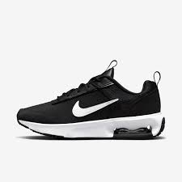

Por que o design da Nike continua surpreendente após 50 anos
A Nike completa 50 anos em 2022 e seu design se mostra mais interessante do que nunca.
Mark Wilson
03/03/2022
Descartável?
Outro dia, visitando o site oficial, encontrei uma das inúmeras descrições já feitas de um tênis e tive um insight do porquê a marca se mantém em alta. Ela poderia ter se tornado mais uma grife descartável, mas continua pensando (até demais) em seus designs – e da melhor maneira possível.
Um grande ano
Como afirmou recentemente o site de moda masculina Hypebeast, a Nike já está tendo um “grande ano”, cheio de lançamentos experimentais. E ainda estamos em fevereiro! A verdade é que, há alguns anos, as tendências lançadas pela empresa têm sido certeiras, além de anunciadas no timing perfeito – como quando a marca divulgou seus Space Hippies sustentáveis ou seus Go Flyeases fáceis de calçar e descalçar.
Arte democratizada
Os tênis são a arte democratizada da nossa era, com a diferença de que seu dono não precisa desembolsar uma fortuna em edições limitadas para participar da brincadeira. Com um investimento a partir de cerca de US $ 75, qualquer um pode adquirir uma verdadeira escultura maximalista para ser usada nos pés.

Aposta da marca
Adotando o caminho contrário, a Nike aposta em uma linguagem de design variada e expressiva. É claro que a marca precisa organizar seus lançamentos e dar alguma direção de cores sazonais para os produtos. Nos Jogos Olímpicos de Tóquio, a estratégia de cores apostava em tons neons futuristas, cruzando essa paleta com o uso de materiais naturalmente coloridos e sustentáveis. De todo modo, a Nike lança inúmeros novos itens todos os anos, cheios de diferentes materiais e tecnologias. Ou seja, projeta muitos produtos, muito bem e de maneira muito diferente.
Como fizeram?
Mas como eles dão conta de fazer isso? Para responder a essa pergunta, é importante destacar seus principais investimentos, como o novo LeBron James Innovation Center, a instalação de pesquisa tecnologicamente mais avançada do mundo, onde designers e cientistas trabalham lado a lado. Quem visita esse centro, como eu fiz no ano passado, pode presenciar como a Nike testa as suas novas cores em uma sala que pode simular tudo, desde a luz do dia até a iluminação fluorescente de seu escritório, e como a marca pede aos consumidores que classifiquem como um determinado tom de branco se parece em cada contexto.
Mark Wilson é redator sênior da Fast Company. Escreve sobre design, tecnologia e cultura há quase 15 anos
Apenas um exercício de HTML :)